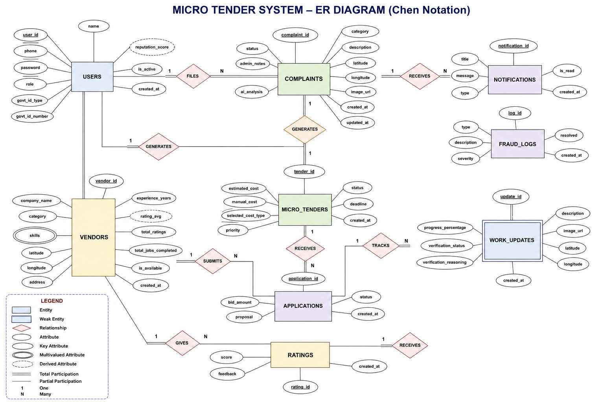

Team Members
ADITHYA S 4PM24CS003
DAYANANDA K S 4PM24CS032
GAJANAN GOVIND GOWDA 4PM24CS045
GLANSON D' SOUZA 4PM24CS047
DBMS MINI PROJECT
A full-stack platform that converts citizen complaints into trackable micro-tenders, connects verified local vendors, and improves civic issue resolution using structured database design.
MicroTender is a smart civic-maintenance platform where citizens report public issues, administrators review and approve them, and local vendors submit bids to resolve them. The system integrates complaint registration, tender generation, vendor assignment, progress tracking, notifications, anti-fraud checks, and citizen ratings in one normalized relational database application.
React + Vite + Tailwind CSS
Citizen, Vendor, and Admin dashboards
Node.js + Express + Socket.IO
REST APIs, auth, workflows, notifications
MySQL relational database
Constraints, foreign keys, indexing, audit data
Complaint form with category, description, map location, and evidence image.
Complaints move through review, approval, bidding, assignment, work, and closure.
Nearby vendors apply with bids, admins assign winners, and jobs become trackable.
Role-wise alerts, work updates, completion review, and citizen feedback.

Users, Complaints, Micro_Tenders, Vendors, Applications, Work_Updates, Ratings, Notifications, and Fraud_Logs form the main schema.
A user files complaints, complaints generate tenders, vendors submit applications, tenders receive work updates, and verified work later receives ratings and notifications.
Verified flows include login, complaint submission, approval, vendor bidding, vendor assignment, work updates, admin verification feed, notification read flow, and citizen complaint detail tracking.
Note: the AI route currently falls back when Gemini API credentials are invalid, but the DBMS workflow remains functional.